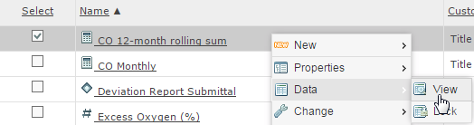
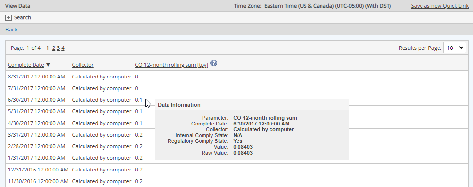
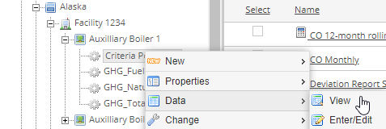
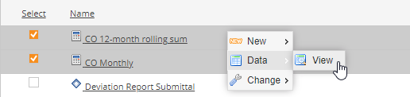
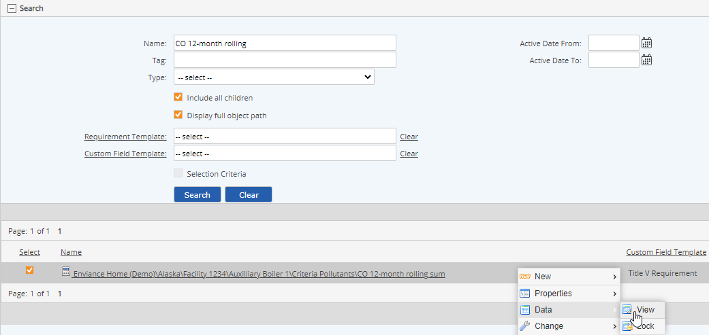
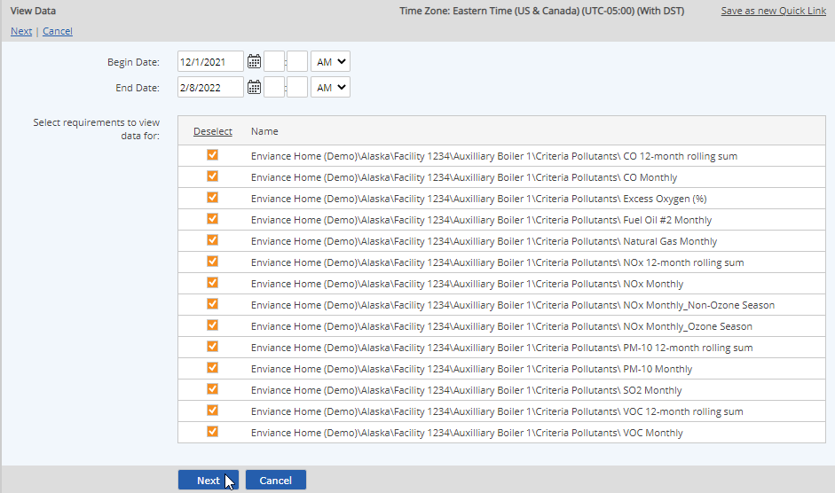
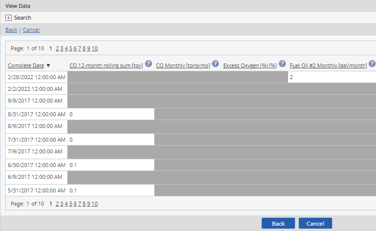
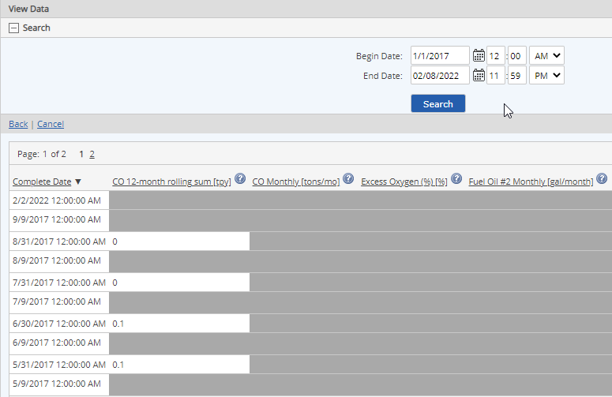

You may view data for:
You can view data for selected requirements in the System Model page by navigating to the location where the numeric requirements are organized and selecting the option to view data. You can set up a quick link in order to make viewing data for the same requirements easier in future from your desktop.
To view data for a single requirement or event:
Right click the requirement and choose Data > View.

Data for the requirement is displayed, in descending chronological order (most recent first). You can change the order by clicking the Complete column head.

To view summary information for a calculated data point, hover the cursor over the data point.
To view data for multiple requirements:
First, select the requirements for which you want to view data, by one of the following methods:
For parameters under the same parent, right click the immediate parent object of the requirements and choose Data > View.

Alternately, in the Applicable Requirements view select the checkboxes for the requirements for which you want to view data. Then right click and choose Data > View.

For requirements under different immediate parent objects, select a common higher parent in the System Model tree, then use the Search function in the Applicable Requirements view to find the requirements. Select the checkboxes for the requirements for which you want to view data, right click and choose Data > View.
Be sure to check the Include all children box when searching.

Refine your selection, if desired, by selecting dates to filter by.
If you selected a parent object rather than specific requirements to initiate data view, all numeric requirements under the parent object are shown. You may select or de-select any requirements.
At this point you can save your filter for future re-use by clicking "Save as new Quick Link." Leave the dates blank before saving to allow selecting different dates when executing the Quick Link.
To filter by dates, enter the Begin Date and End Date. Data is filtered by the Complete Date of data points.

Select Next.
Data for the selected requirements and time period is displayed, in descending chronological order (most recent first). You can change the order by clicking the Complete column head.

To distinguish between parameters with the same name in different locations, click the ? icon next to the parameter name to display the complete path for the parameter.
To view summary information for a calculated data point, hover the cursor over the data point.
To filter results for a specific time period:
Enter Begin and End Dates.
Data is filtered according to the Complete Date.
All data whose Complete Date falls within the specified period will be included.
Click Search.

If you chose to view data from the parent object in the System Model, you can simply select another object in the tree to view data for its requirements. To return to the Requirements view mode, right click the parent object and choose Requirements.
If the selected data set is too large to display online, a message informs you that you must either choose fewer data points or generate a report to obtain the data you want. See Managing Reports: Standard Report Types: Data Report in the Administrators Guide for more information.